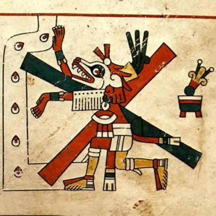
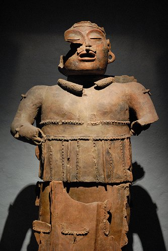
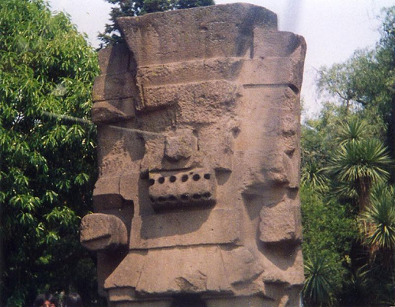

Chi era Enucatl?
Enucatl è il fratello di Quetzalcoatl, dal quale si distingue per la mancanza di piumaggio; è
solitamente raffigurato nella forma di un serpente con ali di pipistrello,
una tagliente coda biforcuta, una folta criniera sanguigna, un muso
allungato di coccodrillo munito di micidiali zanne.
Leggi tutto »

Il buon Satrapàme
noto, tra i numerosi sovrani aztechi, per aver posto fine al
Sacri Misteri regolarmente celebrati in onore del dio Enucatl
e alla furia inconoclasta che il suo predecessore, il tiranno
Mauro, aveva scatenato nei confronti delle altre divinità.
Leggi tutto »

Il sanguinario tiranno Mauro
il suo nome non è azteco: furono gli spagnoli a
tradurre così, fraintendendo, l'aggettivo mah-urr (nero
d'animo) con cui egli veniva descritto da una popolazione, a
distanza di due secoli, ancora terrorizzata.
Leggi tutto »
Precolombiani in lotta per il
potere e per la vera religione
L'innegabile suono azteco del nome (come Quetzalcoatl, per
capirci) diede inizio alla riscrittura di quasi mezzo secolo della
storia di quel popolo. Tutto comincia nel 1300, con la nascita del
Tiranno Mauro (ovviamente da tirannosauro), il quale
incontra da giovanissimo il culto di Enucatl e decide di imporlo con
la forza una volta guadagnato il controllo dell'esercito. Enucatl
è il fratello di Quetzalcoatl senza piume, ed è Tauroboliaste e
Psicopompo (citazione ancora dal Pendolo) nella mitologia
mesoamericana. Dopo anni di crudele regno il Tiranno Mauro verrà
rovesciato dal cugino, il buon Satrapame, che riporterà la pace.